컴퓨터응용가공산업기사 (2007-05-13 기출문제)
1과목: 기계가공법 및 안전관리
1. 그림과 같은 정면 밀링커터에서 엑시얼 경사각은?
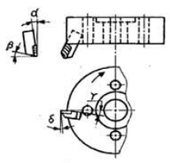
- α
- β
- γ
- δ
(정답률: 54%)

2. 선반에서 일반적인 안전수칙으로 틀린 것은?
- 연속으로 생성되는 칩은 칩 제거용 기구를 사용하여 제거한다.
- 가동 전에 주유 부분에는 반드시 주유한다.
- 회전하고 있는 부분을 맨손으로 정검하는 것은 위험하므로 장갑을 끼고 점검한다.
- 선반이 가동될 때에는 자리를 이탈하지 않는다.
(정답률: 92%)
3. 벨트를 폴리에 걸 때는 어떤 상태에서 해야 안전한가?
- 저속 회전 상태
- 중속 회전 상태
- 회전 중지 상태
- 고속 회전 상태
(정답률: 88%)
4. 밀링머신 종류 중 생산형 밀링 머신은?
- 수직 밀링 머신
- 수평 밀링 머신
- 플래노 밀러
- 회전 밀러
(정답률: 28%)
5. 산화알루미늄 분말에 Si 및 Mg 등의 산화물과 미량의 다른 원소를 첨가하여 고온에서도 경도가 높고 내마열성이 좋으며, 초경합금 보다 더욱 높은 속도로 절삭할 수 잇으나 취약한 것이 결점인 공구재료는?
- 고속도강
- 스텔라이트
- 다이아몬드
- 세라믹
(정답률: 77%)
6. 빌트 업 에지(built-up edge)의 방지 대책이 아닌 것은?
- 절삭 깊이의 증대
- 바이트 상면 경사각의 증대
- 절삭속도의 증대
- 적당한 윤활유의 사용
(정답률: 74%)
7. 센터리스(centerless)연삭법의 장점이 아닌 것은?
- 대형 중량물의 연삭이 용이하다.
- 긴 축 재료의 연삭이 가능하다.
- 연속작업을 할 수 있어 대량 생산에 적합하다.
- 연삭 여유가 작아도 된다.
(정답률: 65%)
8. 연삭숫돌표시법의 WA-60-K-m-V에서 결합도를 나타내는 것은?
- WA
- V
- K
- m
(정답률: 77%)
9. 호빙 머신의 차동장치는 어느 경우에 가장 적합한가?
- 워엄기어를 절삭 가공할 때
- 베벨기어를 절삭 가공할 때
- 헬리컬 기어를 절삭 가공할 때
- 치형을 정밀하게 완성 가공할 때
(정답률: 49%)
10. 셰이퍼 가공에서 행정길이가 300mm, 절삭속도가 40m/min, 절삭행정의 시간과 바이트 1왕복 시간의 비 k=0.6으로 했을 때, 바이트의 매분 왕복횟수는 얼마인가?
- 40
- 60
- 80
- 100
(정답률: 32%)
11. 절삭유의 사용목적으로 틀린 것은?
- 공구의 냉각
- 공작물의 냉각
- 칩의 제거
- 마찰계수의 증가
(정답률: 89%)
12. 슈퍼피니싱의 특징 설명으로 틀린 것은?
- 원통형의 가공물 외면, 내면과 평면 등의 정밀 다듬질이 가능하다.
- 다듬질 된 면은 평활하고, 방향성이 없다.
- 입도가 비교적 크고, 경한 숫돌에 고압으로 가압하여 연마하는 방법이다.
- 가공에 의한 변질층의 두께가 매우 작다.
(정답률: 61%)
13. 직접 측정의 장점으로 틀린 것은?
- 측정기의 측정범위가 다른 측정법보다 넓다.
- 피측정물의 실제치수를 직접 읽을 수 있다.
- 눈금을 읽기 쉽고 측정시간이 적게 걸린다.
- 수량이 적고 종류가 많은 제품의 측정에 적합하다.
(정답률: 50%)
14. 선반가공에서 길이가 지름의 20배가 넘는 환봉을 절삭할 때 진동을 방지하기 위해 사용하는 부속장치는?
- 심봉(mandrel)
- 돌리개(dog)
- 방진구(work rest)
- 돌림판(driving plate)
(정답률: 77%)
15. 그림과 같은 테이퍼를 선반에서 심압대를 편위시켜 절삭코저 한다. 심압대를 몇mm 편위시켜야 되는가?
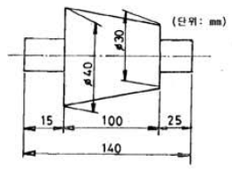
- 7
- 8
- 9
- 10
(정답률: 42%)
16. 밀링 머신의 일반적인 부속장치에 해당 되지 않는 것은?
- 회전 테이블
- 슬로팅 장치
- 래크 절삭장치
- 브로칭 장치
(정답률: 56%)
17. 한계 게이지의 특징 설명 중 틀린 것은?
- 제품 사이의 호환성이 있다.
- 제품의 실제치수를 읽을 수가 없다.
- 조작이 간단하므로 경험이 필요하지 않다.
- 1개의 치수마다 4개의 게이지가 필요하다.
(정답률: 48%)
18. 하이트 게이지(height gauge)에서 그 종류의 형(型)에 해당 되는 것은?
- HA형
- HB형
- HC형
- HD형
(정답률: 54%)
19. 직립드릴링 머신의 크기에서 스윙을 나타내는 것은?
- 컬럼의 중심부터 주축 표면까지 거리의 3배
- 주축의 중심부터 컬럼 표면까지 거리의 3배
- 컬럼의 중심부터 주축 표면까지 거리의 2배
- 주축의 중심부터 컬럼 표면까지 거리의 2배
(정답률: 43%)
20. 액체 호닝에 대한 특징 설명 중 틀린 것은?
- 공작물 표면의 산화막이나 거스러미(burr)를 제거하기 쉽다.
- 피닝 효과가 있다.
- 형상이 복잡한 것도 쉽게 가공한다.
- 가공시간이 길다.
(정답률: 56%)
2과목: 기계설계 및 기계재료
21. 구리(Cu)의 성질을 설명하였다. 옳지 않은 것은?
- 황산, 염산에 대한 내식성이 크다.
- 전기전도율과 열전도율은 금속 중에서 은(Ag) 다음으로 높다.
- 연성과 전성이 풍부하다.
- Ni, Sn, Zn 등과 합금이 잘 된다.
(정답률: 64%)
22. 담금질 조직 중 가장 경도가 높은 것은?
- 펄라이트
- 마텐자이트
- 솔바이트
- 트루스타이트
(정답률: 88%)
23. 다음 중 양은(洋銀)의 주요 구성 성분은?
- Cu-Ni-Fe
- Cu-Ni-Zn
- Cu-Ni-Mg
- Cu-Ni-Pb
(정답률: 50%)
24. 다음 원소 중 중금속이 아닌 것은?
- Fe
- Ni
- Mg
- Cr
(정답률: 64%)
25. 황동계 실용 합금인 톰백에 관한 설명으로 틀린 것은?
- 8~20%의 Zn을 함유하는 황동이다.
- 새깔이 금색에 가까워서 모조금으로 사용된다.
- 전연성이 나쁘다.
- 냉간가공이 쉽다.
(정답률: 63%)
26. 비중이 1.74로서 실용 금속재료 중 가장 가볍고, 열전도율과 전기 전도율은 Cu, Al 보다 낮고 강도는 작으나 절삭성이 좋은 비철 금속은?
- Zn
- Mg
- Si
- Ni
(정답률: 59%)
27. 감금질한 강에 A1변태점 이하의 열을 가하여 인성을 부여하고 기계적 성질의 개선을 하고자 하는 열처리는?
- 뜨임
- 질화법
- 불림
- 침탄법
(정답률: 64%)
28. 성형이 어려운 텅스텐 등과 같은 고온용 신소재의 소결법으로 가장 적절한 것은?
- 분말야금법
- 주조법
- 용접법
- 압연법
(정답률: 60%)
29. 보기 중에서 재료의 물리적 성질들 만으로 짝지어진 것은?
- ①,②,④
- ①,②,③
- ②,③,④
- ①,②,⑤
(정답률: 42%)
30. Fe-C 상태도 에서 공석반응을 일으키는 온도는 약 몇 도 인가?
- 521℃
- 621℃
- 723℃
- 821℃
(정답률: 68%)
31. 그림과 같은 기어 트레인 에서 기어 A, B, C의 잇수를 각각 32, 15, 64라 하고 A 기어의 회전수가 1600rpm 이라면 C 기어의 회전수는 약 몇 rpm인가?
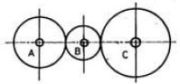
- 800
- 1600
- 2400
- 3200
(정답률: 44%)
32. 4ton의 축 방향 하중과 비틀림이 동시에 작용하고 있을 때 다음 중 가장 적합한 체결용 미터 보통나사 호칭은? (단, 허용 인장응력은 4.8kgf/mm2이고, 비틀림 응력은 수직응력의 1/3 정도로 본다.)
- M 58
- M 48
- M 84
- M 64
(정답률: 59%)
33. V-벨트 전동장치에 대한 장점을 설명한 것 중 틀린 것은?
- 지름이 작은 폴리 에도 사용할 수 있다.
- 바로 걸기 보다 엇걸기로 하여야만 한다.
- 마찰력이 평 벨트보다 크고, 미그럼이 적어 비교적 작은 장력으로 큰 회전력을 전달할 수 있다.
- 이음매가 없어 운전이 정숙하다.
(정답률: 73%)
34. 지름 20mm, 피치 2mm인 2줄 나사를 10 회전 시켰더니 완전하게 체결되었다. 이 나사의 리드(lead)는 몇 mm인가?
- 20
- 40
- 4
- 2
(정답률: 59%)
35. 금속 불말을 가압ㆍ소결하여 성형한 뒤 윤활유를 입자 사이의 공간에 스며들게 한 것으로 급유가 곤란한 곳 또는 급유를 하지 않는 곳에 사용하는 베어링은?
- 오일리스 베어링
- 니들 베어링
- 앵글러 볼 베어링
- 롤러 베어링
(정답률: 82%)
36. 다음 중 기계 등을 콘크리트 바닥에 설치하는데 사용되는 볼트의 명칭은?
- 스테이볼트
- 아이볼트
- 충격볼트
- 기초볼트
(정답률: 63%)
37. 응력-변형률 선도에서 재료가 견딜 수 있는 최대의 응력을 무엇이라 하는가?
- 비례한도
- 소성변형
- 항복점
- 극한강도
(정답률: 63%)
38. 바깥지름 d=104mm, 잇수 z=50인 표준 스퍼 기어의 모듈은 얼마인가?
- 5
- 2
- 3
- 4
(정답률: 64%)
39. 중앙에 구멍이 있고 원추형 모양이며, 병렬 또는 직렬로 조합하여 강성을 쉽게 조정할 수 있으며, 프레스의 완충장치, 공작기계 등에 쓰이는 스프링은?
- 토션 스프링
- 판 스프링
- 태엽 스프링
- 접시 스프링
(정답률: 34%)
40. 다음 중 보스와 축을 고정하는 데 주로 쓰이고, 축에 끼워진 기어나 폴리의 위치 조정 및 키의 대용으로 쓰이며, 끝이 담금질 되어 있어 마찰, 걸림 등에 의한 정지 작용도 할 수 있는 나사로 가장 적합한 것은?
- 육각 볼트
- 태핑 볼트
- 작은 나사
- 멈춤 나사
(정답률: 73%)
3과목: 컴퓨터응용가공
41. 주어진 점(control point)을 반드시 통과하는 곡선은?
- spline곡선
- B-spline곡선
- bezier곡선
- ferguson곡선
(정답률: 53%)
42. 모델링 기법 중에서 실루엣(silhouette)을 구할 수 없는 모델링 기법은?
- B-rap(boundary representation)방식
- CSG(constructive solid geometry)방식
- 서피스 모델링(surface modeling)
- 와이어 프레임 모델링(wire frame modeling)
(정답률: 76%)
43. 곡면 모델링(surface modeling)을 설명한 것이 아닌 것은?
- 은선 제거가 가능하다.
- 물리적 성질의 계산이 간단하다.
- NC형상과 가공 데이터를 얻을 수 잇다.
- 면과 면의 교선을 구할 수 있다.
(정답률: 70%)
44. 곡면을 가공할 때 볼 엔드밀이 지나가고 남은 흔적을 말하며 골간의 간격에 따라서 높이가 달라지게 되는 것은?
- path
- length
- pitch
- cusp
(정답률: 63%)
45. NURBS(Non Uniform Rational B-spline)곡선을 일반적인 B-Spline과 비교한 장점을 설명한 것 중 틀린 것은?
- B-spline은 각각의 조정점에서 3개의 자유도를 갖고 NURBS에서는 4개의 자유도를 갖는다.
- 곡선의 자유로운 변형이 가능하다.
- 타원, 포물선, 쌍곡선 등 원추곡선을 정확하게 표시 할 수 있다.
- 자유곡선, 원추곡선 등의 프로그램 개발시 작업량이 늘어난다.
(정답률: 54%)
46. CAM system에서 후처리(postprocessing)의 설명으로 맞는 것은?
- 곡선 또는 곡면을 형상 모델링하는 것을 말한다.
- 곡선 또는 곡면을 형상 모델링한 후 CL데이터를 생성 하는 것을 말한다.
- 곡선 또는 곡면의 CL데이터를 공작기계가 인실할 수 있는 NC코드로 변환시키는 것을 말한다.
- 곡선 또는 곡면의 NC코드를 CL데이터로 변환시키는 것을 말한다.
(정답률: 58%)
47. 다음 중 자유곡면 가공에 해당하지 않는 사항은?
- 적어도 3축 이상의 공작기계가 필요하다.
- 정확한 가공을 위해서 flat-endmill이 적합하다.
- 비교적 가공시간이 매우 길다.
- 비교적 공구마모나 손상이 잦다.
(정답률: 40%)
48. 베지어(Bezier) 곡선의 특징으로 틀린 것은?
- 곡선은 양단의 끝점을 통과한다.
- 곡선은 정점을 연결하는 다각형의 내측에 존재한다.
- 다각형 양끝의 선분은 시작점과 끝점의 접선벡터와 반대방향이다.
- 1개의 정정변화가 곡선 전체에 영향을 미친다.
(정답률: 52%)
49. 중앙처리장치(CPU)와 메인 메모리(RAM) 사이에서 처리될 자료를 효율적으로 이송할 수 있도록 하여 자료 처리속도를 증가시키는 기능을 수행하는 것은?
- 코프로세서(coprocessor)
- 캐시 메모리(cache memory)
- BIOS(basic input output system)
- CISC(complex instruction set computing)
(정답률: 72%)
50. 분산처리형 CAD/CAM 시스템의 특징으로 틀린 것은?
- 자료처리 및 계산 속도를 증가시킬 수 있어서 설계 및 가공 분야에서 생산성을 향상 시킬 수 있다.
- 컴퓨터 시스템의 사용상의 편리성과 확장성을 증가시킬수 있다.
- 주시스템과 부시스템에서 동일한 자료처리 및 계산작업이 동시에 이루어지므로 데이터의 신뢰성이 높다.
- 시스템이 하나가 고장이 나더라도 다른 시스템은 정상적으로 작동할 수 있도록 구성되어 컴퓨터 시스템의 신뢰성과 활용성을 높일 수 있다.
(정답률: 53%)
51. 다음 중 CAD용 입력장치가 아닌 것은?
- 마우스(mouse)
- 트랙볼(track ball)
- 플라즈마판(plasma panel)
- 라이트펜(light pen)
(정답률: 64%)
52. 1600×1200 픽셀 해상도 래스터모니터를 지원하는 그래픽 보드가 트루칼라(24비트)를 지원하기 위해 필요한 최소 메모리는 얼마인가?
- 1MB
- 4MB
- 8MB
- 32MB
(정답률: 49%)
53. 화면에 나타난 데이터를 확대하여 데이터의 일부분 만을 스크린에 나타낼 때 상당부분이 viewport를 벗어나는데 이와 같이 일정한 영역을 벗어나는 부분을 잘라버리는 것을 무엇이라 하는가?
- 윈도잉(windowing)
- 클리핑(clipping)
- 매핑(mapping)
- 패닝(panning)
(정답률: 60%)
54. CAD/CAM 시스템에서 사용하는 좌표계가 아닌 것은?
- 직교 좌표계
- 원통 좌표계
- 원추 좌표계
- 구면 좌표계
(정답률: 64%)
55. 렌더링의 한 기법인 음영법(shading)에서의 난반사(diffuse reflection)에 대한 설명 중 틀린 것은?
- 난반사는 빛이 표면에 흡수되었다가 다시 모든 방향으로 다시 흩어지는 형태이다.
- 한 점에서의 입사각은 해당점에서 광원을 향하는 방향과 그 점에서의 법선벡터가 이루는 각이다.
- 난반사에 의해 물체의 표면상태나 색깔이 잘 묘사된다.
- 난반사는 물체표면이 거울과 같이 매끄러운 표면에서 대부분 일어난다.
(정답률: 37%)
56. 솔리드 모델이 저장되는 데이터 구조가 아닌 것은?
- CSG Representation
- Boundary Representation
- Cell Decomposition
- Tweakng Geometry
(정답률: 42%)
57. x방향으로 2배 축소, y방향으로 2배 확대를 나타내는 변환 행렬 TH는?
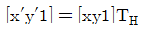
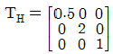
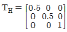
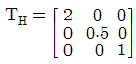
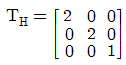
(정답률: 50%)
58. 곡면 모델링(surface modeling) 시스템에서의 곡면 입력 방법이 아닌 것은?
- 곡면상의 점들을 입력하여 이 점들을 보간하는 곡면을 생성하는 방법
- 곡면상의 곡선들을 그물형태로 입력한 곡선망으로부터 보간 곡면을 생성하는 방법
- 곡선을 입력하고 이것을 직선이동이나 회전이동하도록 하여 곡면을 생성하는 방법
- 기본적인 입체를 저장하여 놓고 불리안 조작을 통해 필요한 형상을 생성하는 방법
(정답률: 67%)
59. CAD/CAM의 SOLID 모델에서 B-rep은 모서리, 면 그리고 정점으로 구성된다. 이에는 일정한 상관관계가 성립하는데 V를 정점의 수, F를 면의 수, E를 모서리의 수리 할 때 단순 물체의 오일러 관계식은?
- V - E + F = 2
- V - E - F = 2
- V + E + F =2
- -V - E + F = 2
(정답률: 78%)
60. 음영기법(shading) 방법에는 여러 가지가 있는데 다음 중 가장 현실감이 뛰어난 음영기법은?
- 퐁(Phong) 음영기법
- 구로드(Gouraud) 음영기법
- 평활(smooth) 음영기법
- 단면별(faceted) 음영기법
(정답률: 60%)
4과목: 기계제도 및 CNC공작법
61. 대상물의 일부를 파단한 경계 또는 일부를 떼어낸 경계를 표시하는 선으로 가장 적합한 것은?
- 가는 일점쇄선
- 가는 이점쇄선
- 굵은 실선과 가는 일점쇄선
- 불규칙한 파형의 가는 실선 또는 지그재그선
(정답률: 50%)
62. 그림과 같이 도면의 일부를 도시하는 것으로 충분한 경우 필요부분 만 나타내는 투상도의 명칭은?
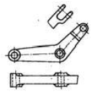
- 국부 투상도
- 부분 투상도
- 회전 투상도
- 부분 확대도
(정답률: 65%)
63. 분할 편의 호칭 지름은 다음 중 어느 것으로 나타내는가?
- 핀 구멍의 지름
- 분할 핀의 한쪽의 지름
- 분할 핀 머리 부분의 지름
- 두 개의 핀 재료를 합쳤을 때의 가상 원의 지름
(정답률: 33%)
64. 구멍의 치수 ø50+0.0250, 축의 치수 ø50-0.015-0.⑤0이라면 무슨 끼워 맞춤인가?
- 헐거운 끼워 맞춤
- 중간 끼워 맞춤
- 억지 끼워 맞춤
- 가열 끼워 맞춤
(정답률: 58%)
65. 다음 중에서 위치 공차를 나타내는 기호가 아닌 것은?
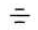
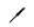
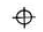
(정답률: 48%)
66. 호칭이 63⑤인 볼베어링에서 ⑤는 무엇을 나타내는가?
- 베어링 폭
- 기본 부하용량
- 베어링 안지름
- 베어링 바깥지름
(정답률: 79%)
67. 다음 도면에서 A의 길이는 얼마인가?
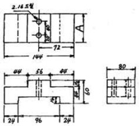
- 60
- 80
- 72
- 96
(정답률: 82%)
68. 다음 나사의 기호 중 관용나사의 기호가 아닌 것은?
- TW
- PT
- R
- PS
(정답률: 57%)
69. 보기와 같은 입체도를 화살표 방향에서 본 투상도로 가장 적합한 것은?
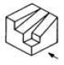
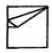
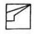
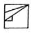
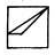
(정답률: 91%)
70. 그림에 표시한 도시기호 중 가공 모양을 나타내는 것은?
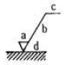
- a
- b
- c
- d
(정답률: 58%)
71. 컨트롤러의 정보처리 회로에서 서보기구로 보내는 신호의 형태는 무엇인가?
- 펄스
- 전류
- 주파수
- 전압
(정답률: 68%)
72. CNC 공작기계의 제어방식 분류에 해당하지 않는 것은?
- 개방회로 방식
- 반폐쇄회로 방식
- 폐쇄회로 방식
- 반개방회로 방식
(정답률: 85%)
73. CNC 선반에서 공구끝 반지름 1.0mm를 가진 둥근바이트로 다듬질 가공을 하고자 할 떄 공구의 이송속도는? (단, 요구되는 표면거칠기 이론값은 0.02mm로 한다.)
- 0.40mm/rev
- 0.46mm/rev
- 0.56mm/rev
- 0.78mm/rev
(정답률: 31%)
74. CNC선반 프로그램에서 공장물 좌표계 설정, 주축 최고회전수 설정과 관계있는 준비기능은?
- G50
- G30
- G28
- G27
(정답률: 60%)
75. 다음 도형의 ⓐ→ⓑ→ⓒ로 가공하는 CNC선반 프로그램에서 ㉠, ㉡에 들어갈 내용으로 맞는 것은?
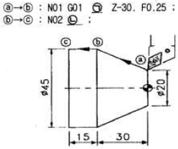
- ㉠X45. ㉡W-15.
- ㉠X45. ㉡W-45.
- ㉠X15. ㉡Z-30.
- ㉠U15. ㉡Z-15
(정답률: 63%)
76. CNC선반에서 다음 블록의 의미를 바르게 설명한 것은?
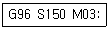
- 절삭속도가 150m/min으로 일정하게 유지된다.
- 주축회전수가 150rpm으로 일정하게 유지된다.
- 절삭속도를 150m/min 이하로 제한한다.
- 주축회전수를 150rpm 이하로 제한한다.
(정답률: 55%)
77. 다음 CNC 공작기계의 안전에 관한 사항 중 틀린 것은?
- 강정반 및 CNC 유닛은 어떠한 충격도 주지 말아야 한다.
- 먼지나 칩을 제거하기 위해 강전반 및 CNC 유닛은 압축공기로 청소하여야 한다.
- 항상 비상 버튼을 누를 수 있도록 염두에 두어야 한다.
- 기계청소 후 측정기와 공구를 정리하고 전원을 차단한다.
(정답률: 64%)
78. 다음 머시닝센터 프로그램에서 Q_는 무엇을 의미하는가?
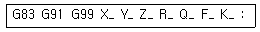
- 반복회수
- 복귀점의 위치
- 이송속도
- 매회 절입량
(정답률: 75%)
79. 머시닝센터의 공구 보정에 대한 설명 중 틀린 것은?
- 프로그램에 의한 보정량의 입력은 G20 P_ R_: 이다.
- G40 기능은 공구지름 보정 취소이다.
- 공구길이 보정 준비기능은 G43, G44 이다.
- G42는 공구지름 우측 보정 기능이다.
(정답률: 59%)
80. CNC 선반의 인서트 팁 규격에서 G가 의미하는 것은?
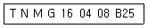
- 팁 형상
- 단면 형상
- 칩 브레이커 형상
- 날 끝 반지름
(정답률: 51%)